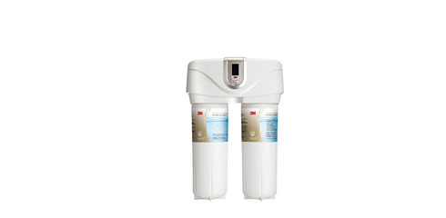
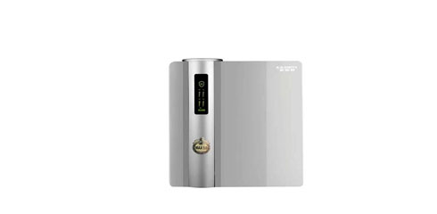
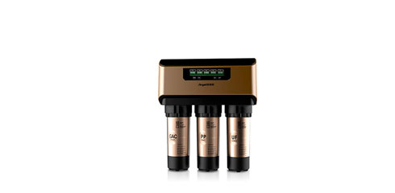
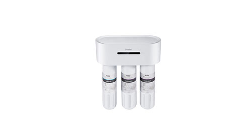
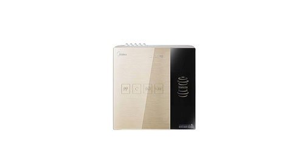
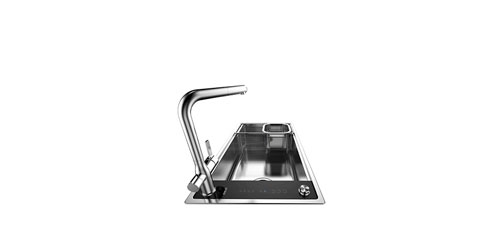
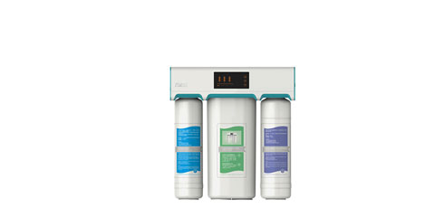
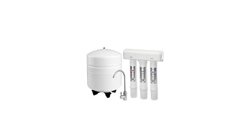

净水机


- 
- 3M 8000T
- 3M品牌的品质保障，高端的产品定位，注定是不凡的一代。兼顾大气与便捷，提升使用感受。不排废水，大大的避免水资源浪费，节能更环保。独特的过滤结构也使过滤效果大大增强，保证饮用安全。

- 
- A.O.史密斯 AR1300-F1
- 如此多的安全与智能，却不需要诺大的空间，摆脱了有桶限制，身体更加灵巧，大大节省储存空间。全新的滤芯技术带来洁净的饮水体验，母婴级的饮水保障，安全更放心。
- 
- 安吉尔 A6
- 通过其功能就能了解到一个产品的用心程度，安吉尔A6净水器将水质自选、72小时保鲜、双膜双水、智能滤芯提醒等周到考虑，竭尽为用户安全用水、舒适用水而努力，是一款贴心的可备之选。
- 
- 海尔 HRO1000-4A
- 这款海尔HRO1000-4A净水器在一定程度上减少了使用的麻烦，无水桶与不插电设计师净水器使用过程简化，然而却不削弱功效。原装进口的美国陶氏RO滤芯极大保障水的过滤质量，安全也安心。
- 
- 美的 MRO1595A-75G
- 这是一个活力芯拯救压力罐的故事。无桶设计结合活力芯，节省空间的时候也丝毫不耽误技能发挥。滤芯更换简单，避免繁缛步骤。更有1:1的废水比，告别废水肆虐的年代，节能环保省资源。
- 
- 欧琳 JBS1T-OLGS800
- 对于这样的新科技，小编不得不说，太赞了！净水机与水槽加上水龙头，结合的可谓是相当完美。不仅相互之间没有阻挡，还将每处功能利用最大化，是十分有效的，符合现代生活方式的结合。
- 
- 万家乐 YCZ-CB63-A2A
- 一款极具优化性的净水器，撇除了传统储水罐，出水更健康，机器更省地儿。1：1的低废水，节能环保还省钱。三级过滤是精品，抵得过五级，滤得掉污物，全进口材料更有保障。
- 
- 怡口 800GPRO
- 超安全的过滤水准大大保证人们的饮水质量，能喝到健康才是最重要的，严防死守的过滤精度是污染物无法突破的关卡。自动断流与安全的水管走线，扔掉智能噱头，从根本上解决痛点，大大节省人力。